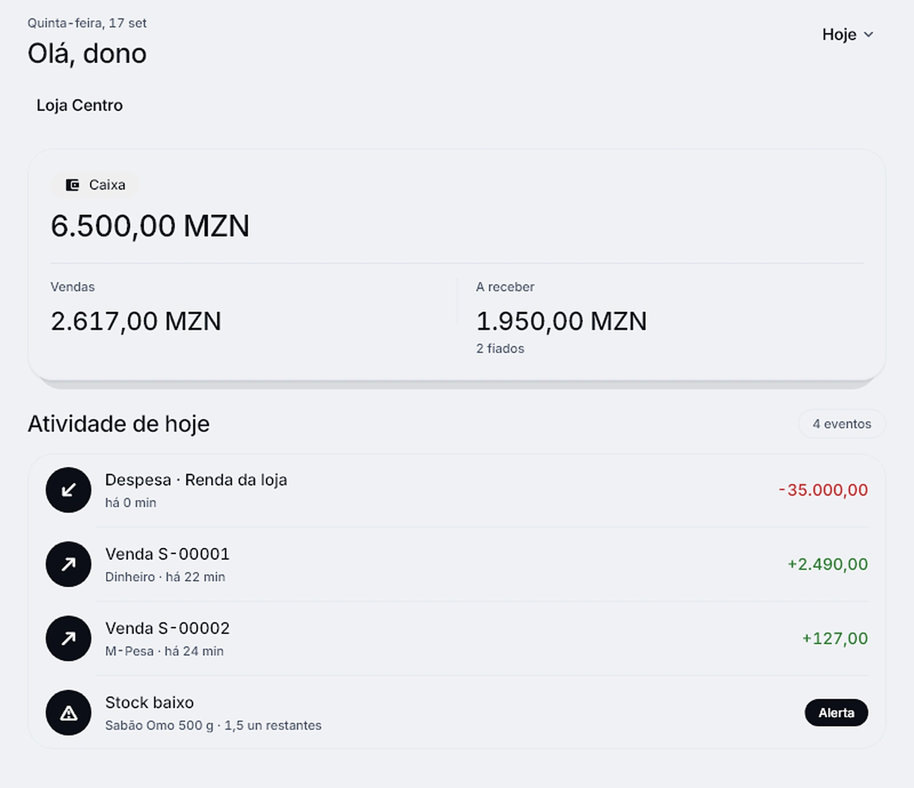

Vendas ligadas ao stock
Registe a venda e acompanhe a quantidade disponível.
Gestão prática para lojas em Moçambique
Registe vendas, acompanhe o stock e saiba como está o caixa. O Tareqo reúne as tarefas essenciais da loja no telemóvel e no computador.
Da operação ao controlo
Feito para mercearias, lojas, pastelarias e negócios familiares. Ligue vendas, stock, compras e caixa numa rotina simples de acompanhar.
Registe a venda e acompanhe a quantidade disponível.
Veja entradas, saídas e valores ainda por receber.
Organize produtos, equipa e movimentos da operação.
01 / Vendas
Encontre produtos com facilidade e registe cada venda. O movimento actualiza o stock e fica ligado ao caixa da loja.
Escolher uma plataforma02 / Stock
Organize produtos, acompanhe entradas e saídas e consulte quantidades disponíveis. O controlo por lotes ajuda a gerir validade e reposição.
Ver o Tareqo em funcionamentoAdicione os produtos recebidos e os seus custos.
Acompanhe quantidades e datas de validade.
Consulte o stock à medida que regista vendas.
03 / Finanças
Acompanhe carteiras, entradas, saídas e valores a receber. Perceba como o dinheiro se movimenta no seu negócio.
Solicitar uma demonstração
Onde trabalha
Use a plataforma que se adapta ao dia a dia da sua loja.
No telemóvel ou tablet.
DescarregarAbra no navegador.
Abrir Tareqo Web (abre numa nova janela)No computador da loja.
DescarregarPróximo passo
Peça uma demonstração e converse com a equipa sobre funcionalidades, configuração e preços para a sua operação.
Falar com a equipa no WhatsApp (abre numa nova janela)Tareqo
Vendas, stock e caixa, organizados para o dia a dia.